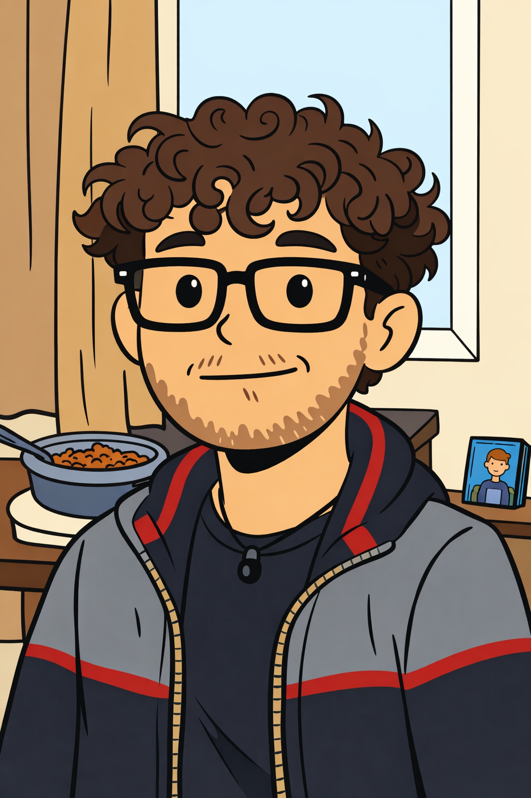
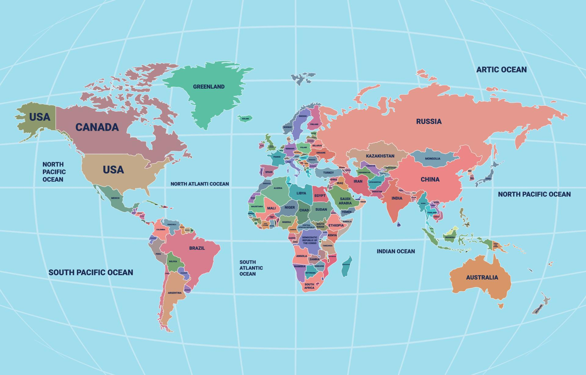

Hi there! 👋
I'm Michael Musallam.
I'm a Mathematics and Computer Science student who enjoys building things that feel real and
useful.
I like working on hands on projects, especially in game development, computer vision, and web
design,
where I can turn ideas into something interactive. I'm someone who learns by doing, always trying
to
improve my skills and find better ways to create. I care about making things that are both
functional
and personal, and I bring that mindset into everything I work on.

 JavaScript
JavaScript
 HTML
HTML
 CSS
CSS
I'm Michael Bishara Musallam, a tech enthusiast with a strong background in mathematics, computer science, and project
development.
Over the years, I have worked on research projects,
built software tools, and created game prototypes in Unity.
I am comfortable coding, problem solving, and using
tools to make complex tasks simpler.
I have also led small projects, collaborated with
others, and figured out solutions on the fly when challenges came up.
I enjoy learning new skills, experimenting with creative
ideas, and turning concepts into working projects.
Beyond tech, I like thinking about how things connect, improving processes, and finding smarter ways to
get work done.
Life Landmarks
Bethlehem & Beit Sahour, Palestine
Born and raised between Bethlehem and Beit Sahour, I built a strong cultural foundation and completed my Tawjihi with a 90.1% average. These years shaped my resilience, discipline, and identity.
Famagusta, Cyprus
I later moved to Famagusta to study Mathematics and Computer Science at Eastern Mediterranean University. Living independently abroad, I earned High Honors and Honors in my first year while navigating financial and personal challenges.
